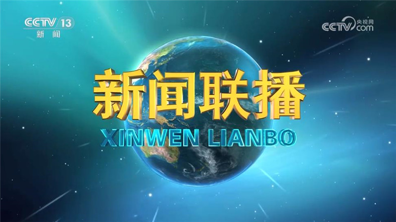
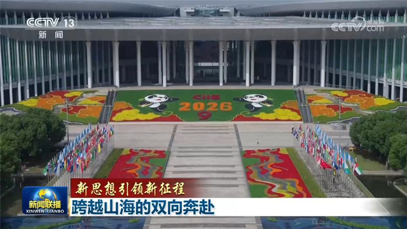
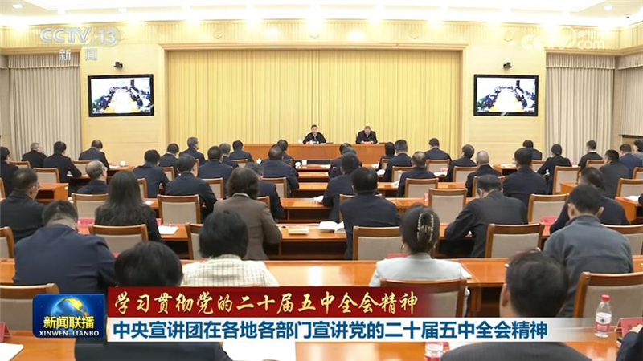
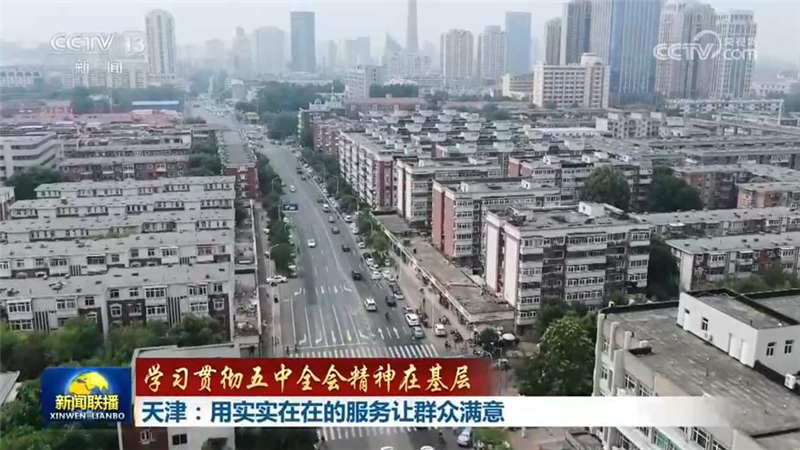
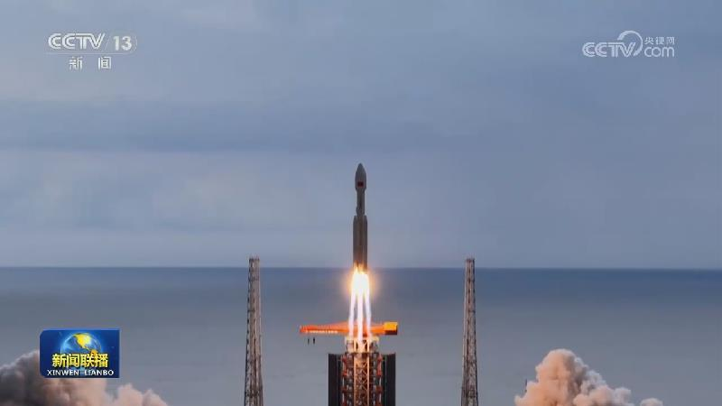
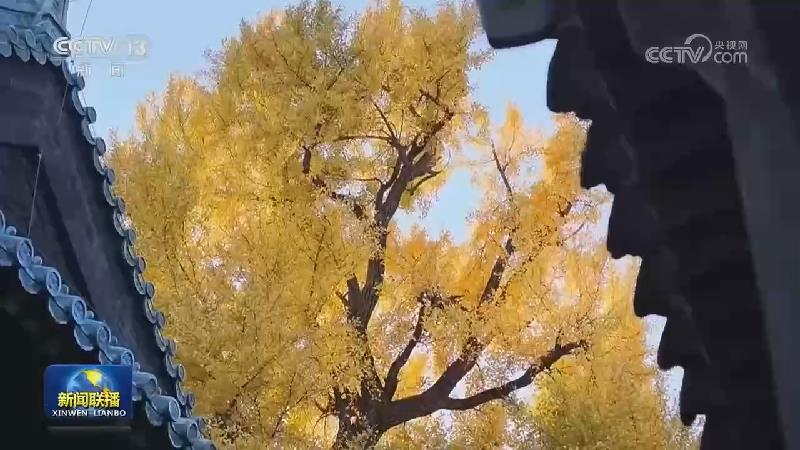
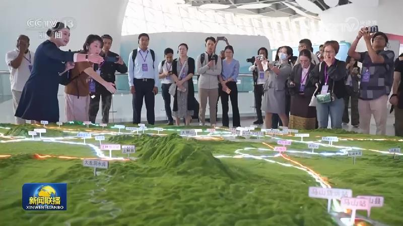
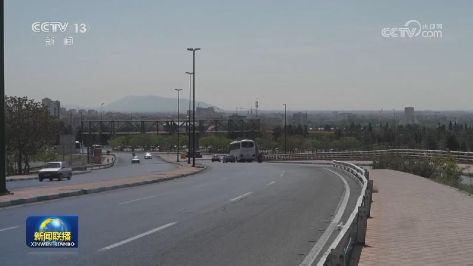
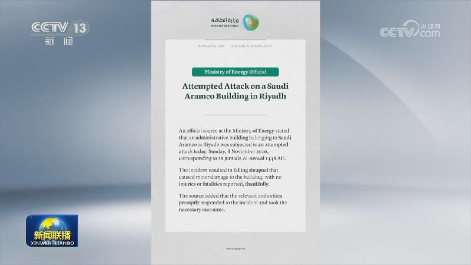

01
习近平致电祝贺约托娃当选保加利亚总统
11月6日，国家主席习近平致电伊莉亚娜·约托娃，祝贺她当选保加利亚共和国总统。

11月6日，国家主席习近平致电伊莉亚娜·约托娃，祝贺她当选保加利亚共和国总统。

习近平总书记强调，坚定奉行互利共赢的开放战略，不断以中国新发展为世界提供新机遇。“十五五”开局之年，超大规模市场吸引更多外资企业深耕中国、共享机遇。与此同时，中国产品、服务、技术、标准加快走向世界，助力各国发展。
国务院总理李强日前签署国务院令，公布《中医药传统知识保护条例》（以下简称《条例》），自2027年1月1日起施行。《条例》旨在保护中医药传统知识，促进中医药传统知识的传承和发展，弘扬中医药文化，主要规定了以下内容。

连日来，学习贯彻党的二十届五中全会精神中央宣讲团成员在各地各部门宣讲，并深入基层与干部群众互动交流。

天津、河北积极回应群众“急难愁盼”，努力办好民生实事，以工作的实际成效和群众的获得感，把学习贯彻党的二十届五中全会精神落在实处。
国家统计局今天（11月9日）发布的数据显示，反映衣、食、住、行等居民消费商品和服务价格的居民消费价格指数（CPI），10月份同比上涨0.7%，涨幅比上月有所回落；扣除食品和能源价格的核心CPI，同比上涨0.8%。

“十五五”规划纲要提出，加快低轨卫星互联网组网。今年以来，我国低轨卫星互联网组网加速推进，相关发射、制造能力持续提升。
推动市场设施高标准联通，是全国统一大市场建设的重要举措。长江第二大支流嘉陵江，一度出现航运通而不畅的难题。如何依托全国统一大市场建设，让“黄金水道”释放出更大效益？来看记者的一线调研。

秋末冬初，北京迎来彩叶最佳观赏期，街巷鎏金、山野染红，京城正铺展出一幅幅五彩斑斓的生态画卷，市民游客乐享自然之美。

前十个月国开行发放制造业贷款超4800亿元

美国总统特朗普8日称，美军特遣部队已全面投入运作，加上海上封锁，目前几乎没有物资能够进出伊朗。他当天称，只要美伊谈判取得进展，美国不太可能恢复对伊朗的大规模军事行动，但他并未完全排除再次动武的可能性。

俄称打击乌变电站 乌称袭击致多地停电